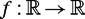

|
| |||||||||||||
|
|
||
Paths are defined in terms of a continuous function. Let f : S → T be a mapping from the domain S to the range T. The points f(s) are the values of f, where s ∊ S. If U ⊂ S, then the image of U under f is denoted f(U) = {f(x) ∊ T | x ∊ U}. If V ⊂ T, then the preimage of V under f is denoted f−1(V) = {x ∊ S | f(x) ∊ V}. First, we introduce an abstract notion of a continuous function and then specialize it for metric spaces.
Let S and T be topological spaces and f : S → T be a mapping. f is continuous at u ∊ S if for every V = nbhd(f(u)) there is a U = nbhd(u) such that f(U) ⊂ V. The mapping f is continuous if for every open subset V ⊂ T, f−1(V) ={u ∊ S | f(u) ∊ V} is open in S.
Essentially, a continuous function is a function where the preimage of an open set is an open set. Now we introduce the standard "delta-epsilon" method for defining continuous functions on metric spaces: The function f is continuous at s if for every ε > 0 there exists a δ > 0 where
| (C.1) |
|
Let  be defined as f(x) = x2. In order to show that f is continuous at a point s, we must find a δ > 0 such that d(f (x), f(s)) < ε for arbitrarily small ε > 0. Note that in the distance function is d(x, s) = |x − s|. First, we study the quantity |f(x) − f(s)|:
Using the triangle inequality, we get
Now we can subsitute |x − s| < δ to see that |f(x) − f(s)| will be less than ε if
Using the quadratic formula, we see that this inequality can be satisfied for
The term on the right-hand side of this inequality is positive, so we can find a suitable δ. This proves that the function f(x) = x2 is continuous at any point . Note the that choice of δ depends on both s and ε.
The set of continuous functions is denoted C0. If the derivative of a continuous function f is continuous, then f is said to be differentiable and belongs to a set denoted C1.If c is k-wise differentiable, then it belongs to a set denoted Ck. If all derivatives of f exist, then f belongs to C∞ and f is said to be smooth. While a path is only required to be of class C0,a trajectory must belong to Ck, k > 0, to allow the definition of velocity, acceleration, etc., at all points where the system is moving.
The following are equivalent statements:
Finally, another useful property of continuous functions is that things "change" continuously. Specifically, if the scalar functions f and g are continuous at x and f(x) < g(x), then there exists a nbhd(x) such that for all y ∊ nbhd(x), f(y) < g(y).
|
|
||
|